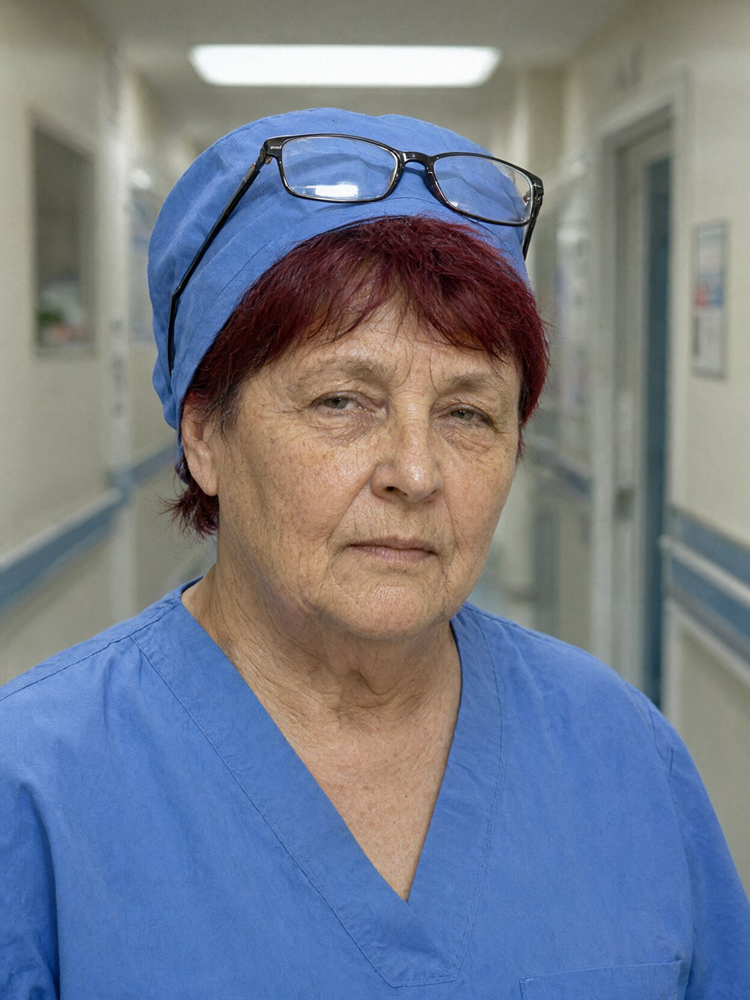

Місто: Львів
Дата: 15.11.2024
Час початку: 09:15 Час закінчення: 10:02
Місце проведення: КНП «Львівська міська лікарня швидкої допомоги № 2», кабінет старшої медсестри приймального відділення (вул. Буковецька, 40)
Складає протокол: капітан поліції Стасюк О.М., старший слідчий СВ Галицького ВП ГУНП у Львівській області
Допитується: Білик Оксана Василівна, 1974 р.н., старша медсестра приймального відділення КНП «Львівська міська лікарня швидкої допомоги № 2», працює в приймальному понад 20 років.
Статус: свідок.
Свідку роз'яснено, що відповідно до ст. 63 Конституції України вона має право не давати показань щодо себе, членів своєї сім'ї та близьких родичів. За відмову від давання показань або завідомо неправдиві показання передбачена відповідальність за ст. 384 КК України. Свідок попереджена, підтвердила розуміння.
Питання: Ви знаєте Гнатів Вікторію Олегівну?
Відповідь: Звісно, знаю. Вона у нас уже більше року, і я бачу, як вона працює. Це чудовий лікар, таких я мало зустрічала. Вона не боїться важких випадків, однаково ввічлива і з дітьми, і з бабусями. Тому одразу скажу: що б там не було, це не те, що ви собі малюєте.
Питання: Я розумію ваше ставлення. Розкажіть, що ви пам'ятаєте про вечір 12 листопада.
Відповідь: Вечір був робочий. Вікторія мала заступити на зміну о двадцятій. Вона в нас, як годинник: приходить за двадцять хвилин до початку, переодягається і одразу до справи. Того дня її не було. Прийшла вона о 20:10, я це точно пам'ятаю, бо саме дивилася на годинник перед обходом.
Питання: Як вона виглядала, коли прийшла?
Відповідь: Мокра. Волосся мокре, без шапки, капюшона теж не було. Блідна, як крейда. Дощ іде з вечора, тож я спершу подумала, що вона попала під зливу на зупинці. Руки в неї трохи тремтіли. Я спитала, що сталося, а вона відповіла, що світлофори не працюють, все стоїть, і вона не встигла.
Питання: Чи запізнювалася вона раніше?
Відповідь: Ні, ніколи. За рік я не пам'ятаю жодного запізнення. Тому я це й запам'ятала. У нас жартують: якщо Гнатів запізнилася, значить, щось сталося з усім містом.
Питання: Чи знаєте ви Сенишина Андрія Васильовича?
Відповідь: Знаю в лице. Бачила його кілька разів, він приходив у лікарню до знайомих, і я бачила його в коридорі з Вікторією. Людина зі стриманими манерами, дуже ввічлива. Про їхні стосунки я нічого особисто не знаю, і не буду вигадувати.
Питання: Хто працював замість неї до її приходу?
Відповідь: Дзюбу Ганну Михайлівну привезла швидка, її прийняв Петрук Іван Іванович. Він мав іти о восьмій, але нічна лікарка не прийшла, тож він лишився. Гнатів ще не було, тому пацієнтку взяв він. О 19:58, я це пам'ятаю, бо її записували при мені. Потім Вікторія прийняла свого першого пацієнта, це було вже після половини дев'ятої.
Питання: Чи бачили ви Вікторію Олегівну протягом вечірньої зміни?
Відповідь: Так, бачила. Вона працювала, пацієнти в неї були, я її бачила в коридорі та на прийомі. Але вона була тиха. Таке буває, коли людина сильно втомилася.
Питання: Коли вона пішла на перерву?
Відповідь: Перерва в нас з одинадцятої до пів на дванадцяту, але вона пішла трохи раніше, о 23:00. Я заходила в ординаторську по журнал, вона сиділа і щось робила в телефоні. Більше я нічого не бачила.
Питання: Чи можете ви уточнити, коли вона вийшла з приймального?
Відповідь: О 23:12 вона вийшла до машини за зарядкою. Її телефон сів, і вона пішла через службовий вихід на паркінг, де стоїть її авто. Я сказала їй, щоб була обережна, бо темно і дощ. Вона повернулася через кілька хвилин. Я її бачила в коридорі, вона була з сумкою. Потім вона пішла в ординаторську, більше я її до кінця зміни не бачила.
Питання: Коли ви побачили Вікторію Олегівну наступного ранку?
Відповідь: Об восьмій. Вона здавала зміну, я була на місці. Була в медичному флісі, синьому, такому, що в нас зимою носять. А пальто її було в пакеті. Згорнуте, так, як я ще ніколи не бачила, щоб хтось носив пальто по приймальному. Вона сказала, що облила його вранці кавою, і тепер не знає, чи віддавати в чистку, чи викидати. Я порадила хімчистку. Вона тільки кивнула.
Питання: Де зберігає свої речі Вікторія Олегівна?
Відповідь: У нас шафки, кожен має свою. У неї шафка номер чотирнадцять, у коридорі, біля ординаторської. Там куртка, сумка, переодяг. Я сама не заглядаю в чужі шафки, це не моя справа.
Питання: Чи були у вас того вечора інші лікарі або медсестри, які бачили Вікторію Олегівну близько 20:10?
Відповідь: Соломія Дзюба, донька пацієнтки, була в коридорі, вона стояла з мамою, але я її тоді не запам'ятала, в нас там багато родичів. Вона могла бачити, що Вікторія проходила, але я не можу сказати напевно. Спитайте її самої. Усе, що бачила я, я вам сказала.
Питання: Чи були під час тієї ночі якісь незвичайні події?
Відповідь: Була повітряна тривога, з чверті на десяту до без тринадцяти десять, більше півгодини. У приймальному ми працюємо як звичайно, пацієнтів не виводимо, хіба що вони самі просяться. Я не пам'ятаю, щоб хтось у той час кудись виходив, окрім того, що я вже сказала.
Питання: Чи хочете ви ще щось додати?
Відповідь: Я хочу, щоб про Вікторію не думали погано через одну важку ніч. Але я скажу правду, бо це ваша робота. Того вечора вона була не така, як завжди. І більше я нічого не знаю.
З моїх слів записано вірно. Протокол прочитано особисто, зауважень не маю.
Свідок: /підпис/ Білик О.В.
Слідчий: /підпис/ капітан поліції Стасюк О.М.